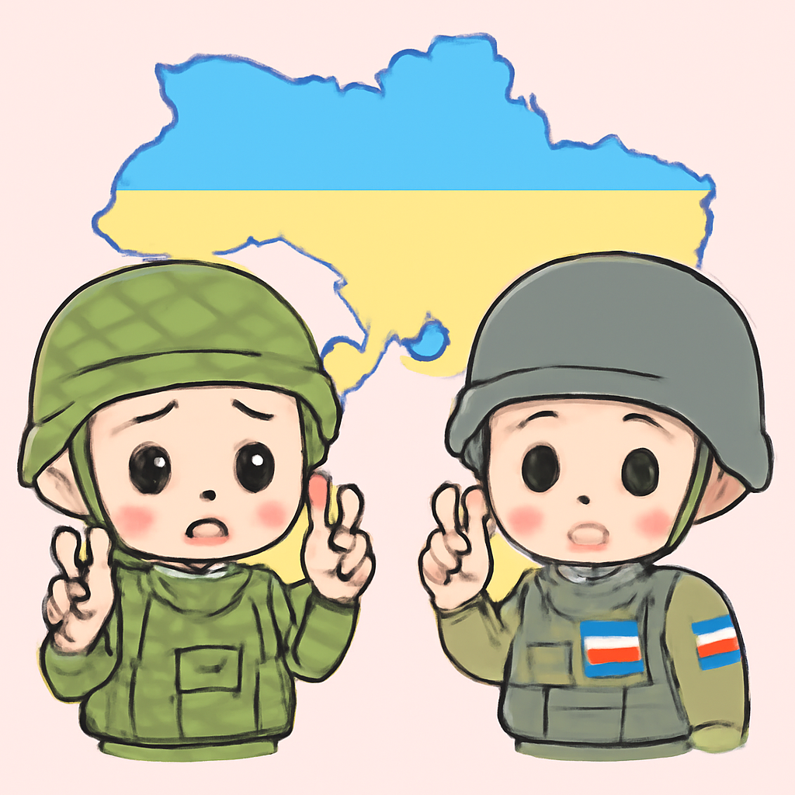
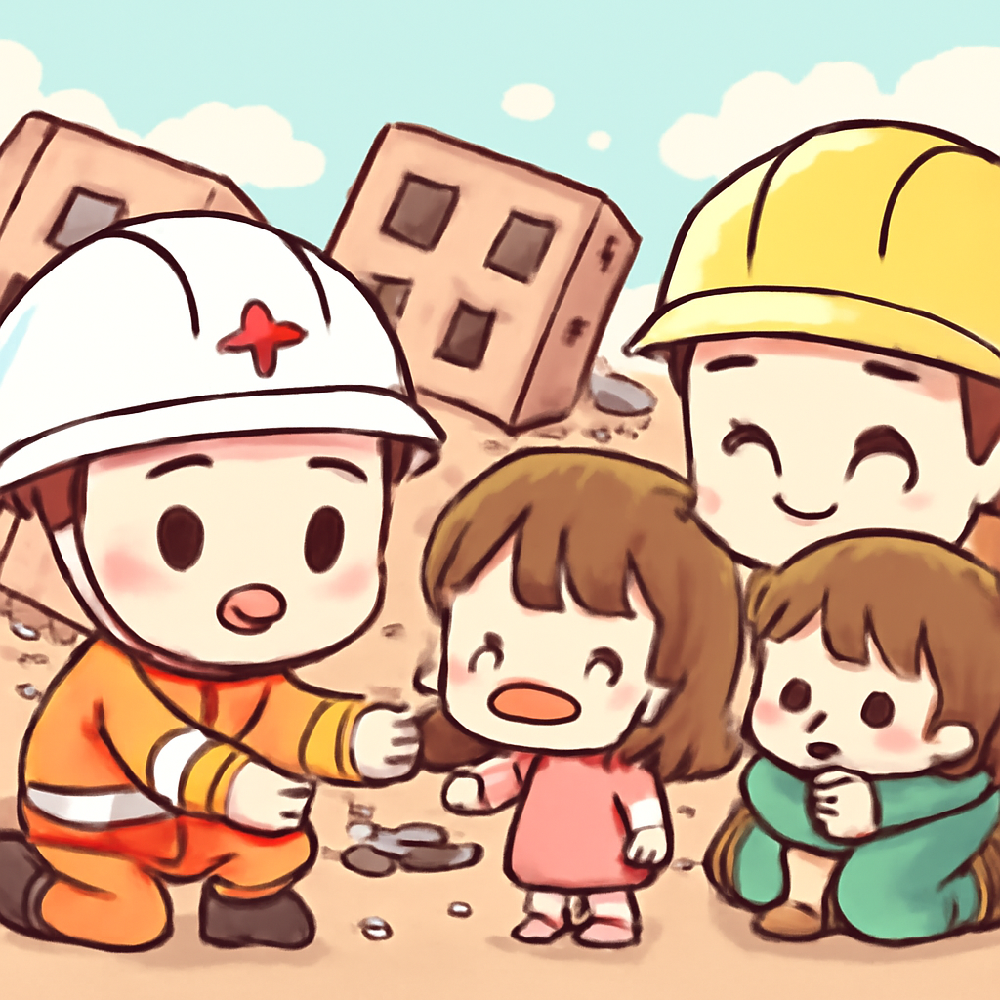
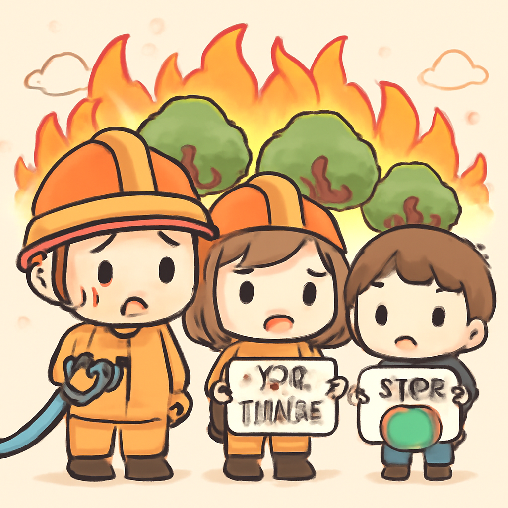
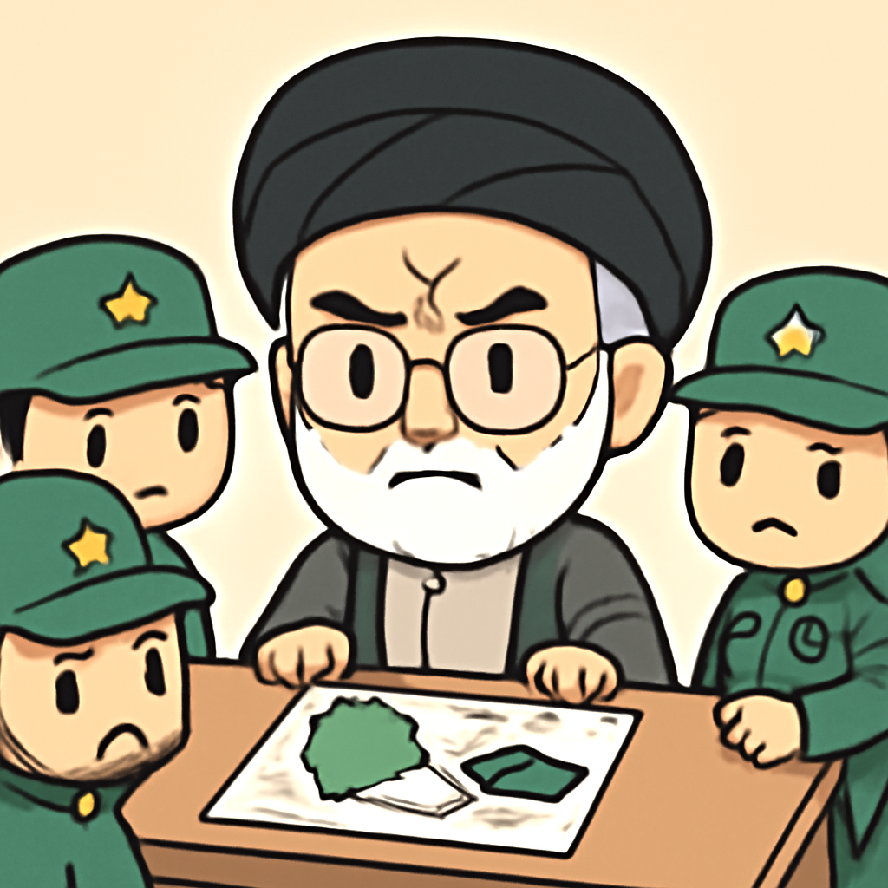

其一 · 俄國基輔 · 俄烏雙方再度交火
俄烏戰爭持續，雙方死傷人數上升。

在俄國基輔，最近的交火再次造成嚴重傷亡，俄方報告有九人喪命，烏克蘭方面則報導四人死於攻擊。這場戰爭不僅影響了兩國人民的生活，也讓國際社會持續關注局勢發展。希望在這場衝突中，雙方能早日找到和平的契機。
🔗 原始新聞 ↗
2026-08-18 · 以古觀今，以笑抗愁
俄烏戰爭持續，雙方死傷人數上升。

在俄國基輔，最近的交火再次造成嚴重傷亡，俄方報告有九人喪命，烏克蘭方面則報導四人死於攻擊。這場戰爭不僅影響了兩國人民的生活，也讓國際社會持續關注局勢發展。希望在這場衝突中，雙方能早日找到和平的契機。
🔗 原始新聞 ↗
印尼發生強烈地震，造成53人死亡。

在印尼雅加達，最近的一場強震導致53人喪生，數千人流離失所，當地面臨嚴重的援助短缺。這場災難不僅摧毀了許多家庭，也讓人擔心生存問題。希望國際社會能迅速伸出援手，幫助這些受災的民眾渡過難關。
🔗 原始新聞 ↗
法國總理面對野火危機，援助金額達1200萬歐元。

法國巴黎，總理因應對野火的表現受到質疑，近期宣布將提供1200萬歐元的援助，以幫助受災地區。野火不斷肆虐，讓不少民眾感到恐慌，政府的應對能力受到檢驗。或許，這次危機能讓大家更重視環境問題的嚴重性。
🔗 原始新聞 ↗
伊朗最高領導人任命硬派人士，顯示持續戰備。

在伊朗德黑蘭，最高領導人哈梅內伊任命了一批硬派人士，顯示出國家將繼續保持戰備狀態，並壓制內部異議。這一舉動可能會增加該國與外界的緊張關係，讓人不禁想問，這樣的選擇是否會為人民帶來更多困擾。
🔗 原始新聞 ↗
俄國反戰政客因「抹黑」軍隊遭重判。
在俄國莫斯科，一位知名的反戰政治人物被判刑11年，罪名是「抹黑」國軍。這一判決引起了廣泛關注，顯示出當前政局的壓迫性。這不僅是對個人的打擊，也是對言論自由的威脅，讓人擔心未來的政治環境會更加嚴峻。
🔗 原始新聞 ↗